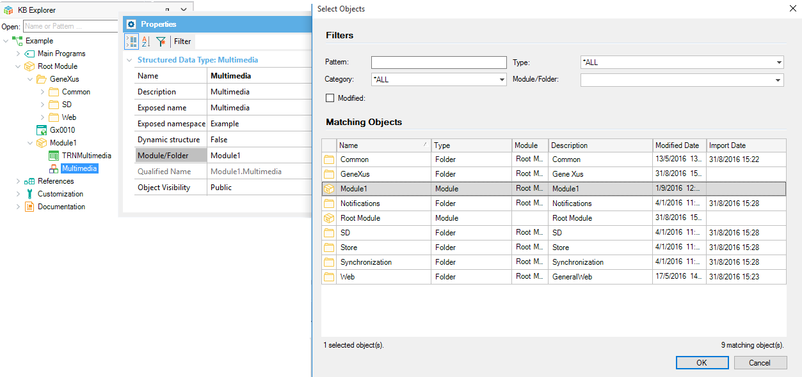

You can indicate the Folder object or Module Object to which the GeneXus objects will belong. Description
Folders establish hierarchies where each folder can contain GeneXus objects as well as other folders — but no Module Objects. Modules also establish hierarchies where each Module can contain GeneXus objects as well as other folders. Please read Modules for further details.  This information can be seen in KB Explorer. See Also
|
| Backlinks | ||
| Business Process Diagram Properties | ||
| HowTo: Adding an object to a Module | Category:Menu for Smart Devices object | Module Object |
| Query Object Properties | Structured Data Type Properties |